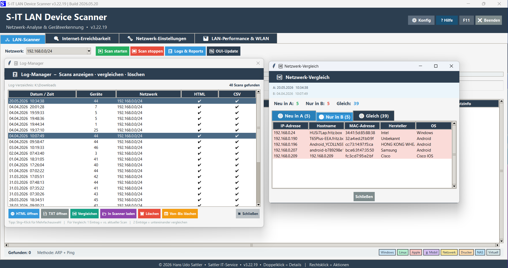
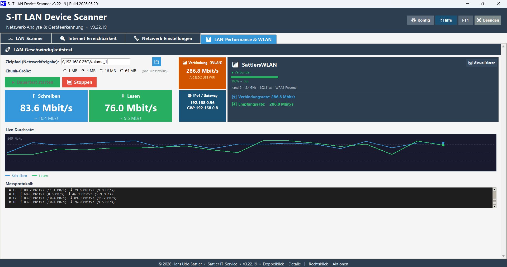
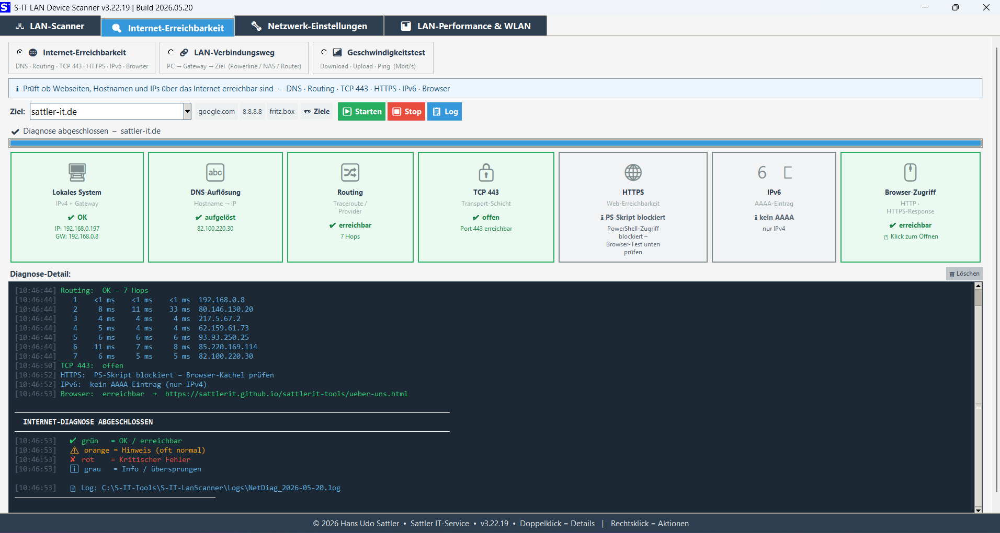

Netzwerk-Scan
Erkennt Geräte, Hersteller (OUI-Datenbank), Betriebssysteme und offene Ports im LAN und WLAN – inklusive Intensiv-Scan mit Npcap. Eigene Zuordnungen lassen sich per Rechtsklick direkt in der Liste setzen.
Internet-Erreichbarkeit
Prüft DNS-Auflösung, Routing, TCP 443, HTTPS, IPv6 und Browser-Zugriff in einer Kachel-Übersicht – dazu Speedtest mit Ping, Download und Upload samt Protokoll.
LAN-Performance
Live-Durchsatztest für Netzwerkfreigaben mit Schreib- und Leseraten, grafischer Kurve und Messprotokoll – Chunk-Größe frei wählbar von 1 bis 64 MB.
WLAN-Analyse
SSID, Signalstärke, Kanal, Frequenzband, Verbindungs- und Empfangsrate direkt aus Windows – ohne Drittanbieter-Software. LAN und WLAN werden gleichzeitig erkannt und getrennt angezeigt.
Netzwerk-Einstellungen
Prüft Netzwerkprofil, Freigaben, SMB-Versionen, Dienste und Firewall-Regeln – mit Reparatur-Funktionen für DNS-, NetBIOS- und ARP-Cache, TCP/IP-Stack und Winsock.
Log-Manager
Alle Scans an einem Ort: anzeigen, vergleichen, löschen. Der Vergleich zweier Scans zeigt neu hinzugekommene und verschwundene Geräte auf einen Blick.
OUI-Updater
Eigenständiges Tool zur Aktualisierung der Hersteller-Datenbank aus den IEEE-Quellen – über 50.000 Einträge auf Knopfdruck, eigene Zuordnungen bleiben erhalten.
Skalierbare Oberfläche
Darstellungsgröße von 100–300 % im Konfig-Dialog – für HiDPI-, UHD- und Hochkant-Monitore. Alle Schriften und Abstände skalieren proportional mit.



Weitere Ansichten: OUI-Updater v1.1 · Netzwerk-Einstellungen auf Hochkant-Monitor
Die aktuelle Version, Hilfe-Datei und Changelog findest du im Release-Bereich auf GitHub.
| Komponente | Anforderung |
|---|---|
| Betriebssystem | Windows 10 / Windows 11 (64-Bit) |
| Rechte | Administratorrechte für den Intensivmodus erforderlich |
| Optional | Npcap für erweiterten ARP- und Intensiv-Scan |
| Lieferumfang | Setup, Deinstaller, OUI-Updater, Hilfe-Datei und ChangeLog |
- ⚙ Konfig, ? Hilfe, F11 und ✖ Beenden liegen jetzt dauerhaft oben rechts im Header – in jedem Tab erreichbar, unabhängig von der aktiven Ansicht. Die Toolbar zeigt nur noch Scan-relevante Funktionen
- Vollständige UI-Skalierung von 100–300 % für HiDPI und UHD, direkt im ⚙ Konfig-Dialog einstellbar – alle Schriften und Pixelwerte skalieren proportional mit
- LAN- und WLAN-Hardware-Erkennung neu aufgebaut: mehrstufige Erkennung über wmic, PowerShell, Registry und netsh – funktioniert jetzt auch auf Geräten, auf denen bisher keine Verbindung erkannt wurde
- Tabs „LAN-Performance & WLAN“ und „Internet-Erreichbarkeit“ vollständig scrollbar – Messprotokoll und Diagnose-Detail sind auch bei hoher Skalierung erreichbar
- Verbindungs- und WLAN-Kacheln passen sich der Fensterbreite an; deaktivierte Adapter werden als solche erkannt und nicht mehr als verbunden angezeigt
- Log-Manager zeigt jetzt auch ältere Scans an, zu denen nur HTML- oder CSV-Dateien vorliegen – Log-Pfade werden vor dem Zugriff normalisiert
- HTML-Report öffnet nach dem Scan nicht mehr doppelt
- OUI-Updater v1.1: DPI-Skalierung, eigenes Hilfe-Fenster, korrektes Taskleisten-Icon; wird bei einem Update jetzt zuverlässig mit ausgetauscht
- Treeview-Zeilenhöhe wird aus der logischen Auflösung berechnet – auf UHD-Monitoren deutlich besser lesbar
- LAN und WLAN werden gleichzeitig erkannt: aktive Verbindung als Hauptverbindung, vorhandene Hardware als Zusatzinfo – mit automatischer Aktualisierung
- Virtuelle Adapter (VirtualBox, VMware, Hyper-V) werden zuverlässig herausgefiltert
- Netzwerk-Einstellungen im 2-spaltigen Raster – übersichtlicher und platzsparender, funktioniert auch auf Hochkant-Monitoren
Community
Portal
Über eine kleine Unterstützung freue ich mich:
PayPal – tool-entwicklung@sattler-it.de